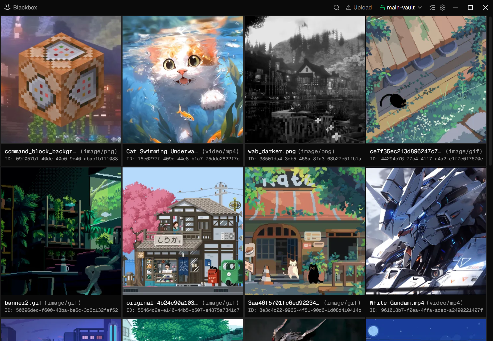

Blackbox secures your files using local encryption. Run it on your own machine, keep control of your data, and choose how you back up or sync encrypted vaults.

Blackbox uses client-side encryption. Passphrases are not stored in vault manifests, and file metadata is encrypted before being written to disk.
Your passphrase is never stored. Keys are derived in memory using scrypt with a unique salt, and all data is encrypted with AES-256-GCM. If you forget your passphrase, your data may be unrecoverable.
Vaults are stored as directories on disk. You choose their location and can back them up or synchronize them using external tools if desired.
Encryption/decryption streams are used for uploads and file access, reducing memory usage when working with large files.
Explore the architecture that empowers Blackbox to remain light, modular, and private.
// Vault metadata and encryption information
{
"id": "43e656a1-2504-4a40-8eb2-de80bc73675b",
"name": "main-vault",
"crypto": {
"salt": "HJKelyLpwb3HmY+fTWEgMg==",
"encryptedDek": "PXqtJGecWQaajvd6PufIuR4Pf0JrtYoMxETWOVQfE1cnICm9rMje3SnhD9uS96WDa9pe3kzpzNYesnhu"
}
}
// Unlinking never touches original files
Blackbox lets you register and unlink vaults. Unlinking clears the local connection config, ensuring your directories are never deleted or modified.
// Each vault has its own identifier and storage location
type VaultEntry = {
id: string; // generated UUID
name: string; // custom vault nickname
location: string; // physical absolute folder path
}
[
{
"id": "8f8b90a1-b4c5-4d6e-8f9a-0b1c2d3e4f5a2,
"name": "Personal Archive2,
"location": "C:\\Users\\admin\\.vaults\\Personal Archive"
}
]
We don't rely on databases. Metadata and encrypted payloads map directly as files, keeping storage footprint negligible and files easily syncable.
Since vaults are filesystem directories, you can sync them using standard cross-platform synchronization tools. Keep your data encrypted on any remote server.
Everything you need to know about the Blackbox encryption mechanics and storage architecture.
Yes. Blackbox is licensed under GPL-3.0 and is completely free. You can view, audit, and compile the entire source code from our GitHub repository, ensuring full transparency about how your data is handled.
By default, vault data is stored locally in the directory you choose. If you place a vault inside a synchronized folder, encrypted vault data may also be copied to the storage provider you use.
Blackbox does not store your passphrase in the vault manifest. Access to encrypted data depends on deriving the correct encryption keys from that passphrase.
Vault directories can be synchronized using third-party file sync tools (such as iCloud Drive, Dropbox, OneDrive or Syncthing). If the vault directory is available on another machine, it can be added to Blackbox and unlocked with the correct passphrase.
Blackbox uses AES-256-GCM authenticated encryption to protect your data. A key is derived from your passphrase using scrypt and a unique random salt, then used to decrypt a randomly generated encryption key that secures the contents of your vault. This design helps protect against brute-force attacks while ensuring only someone with the correct passphrase can access the data.